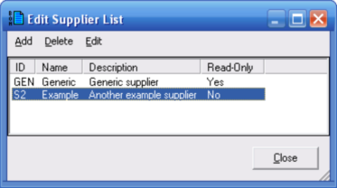

Editing Lists (Bill of Materials Parts Database Window) |
  
|
Editing Lists (Bill of Materials Parts Database Window) |
|
From the Bill of Materials Parts Database window, click the Lists menu to edit your database's lists of various tables in the database. You can edit the following lists:
·Suppliers
·Manufacturers
·Part Categories
·Assembly Categories
·Duct Materials
·Quantity Units
For example, if you click Suppliers the following dialog will open. Other dialogs are very similar except for the Add Duct Material dialog.

Add: Adds a new item to the list. For lists other than duct materials you will be prompted for the name or ID of the new item, as well as the Description. When editing the duct material list the Add Duct Material dialog will be opened.
Delete: This menu item is only enabled if the currently selected item is not read-only. For non-read-only parts you will be prompted to confirm that you really want to delete the item. Note that deleting existing records can affect parts that are in your bill of materials parts database.
Edit: This menu item is only enabled if the currently selected item is not read-only. For non-read-only parts you can edit the name and the description.
Close: Closes this dialog without making any further changes.